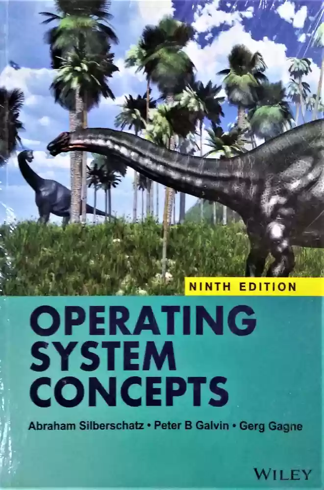
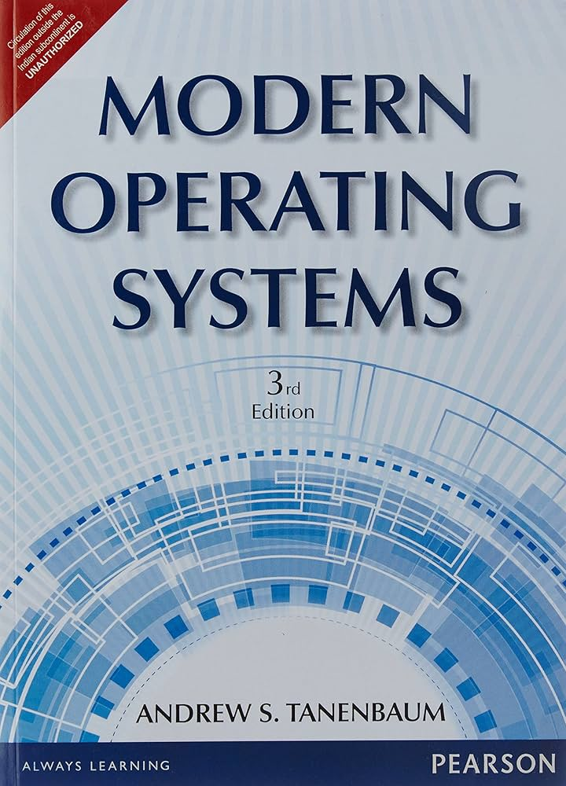
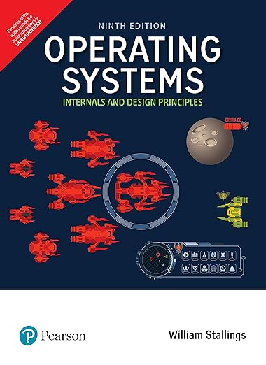
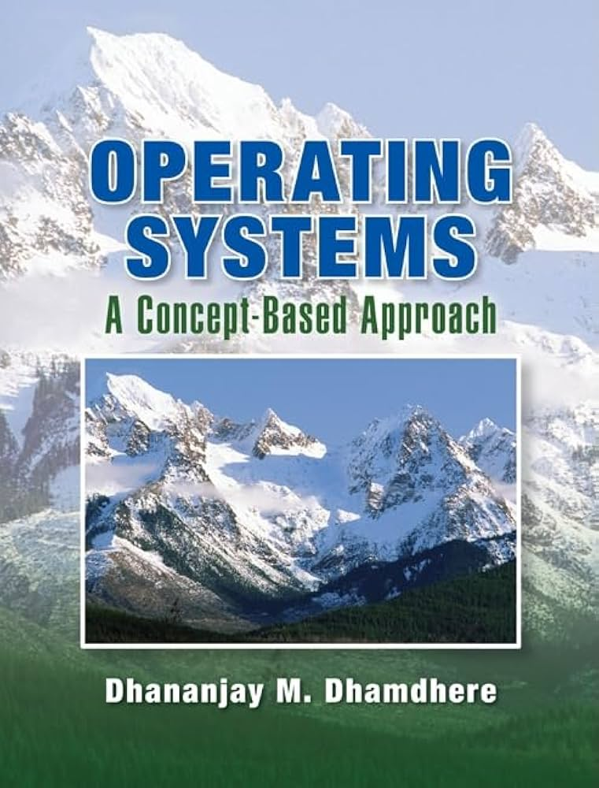
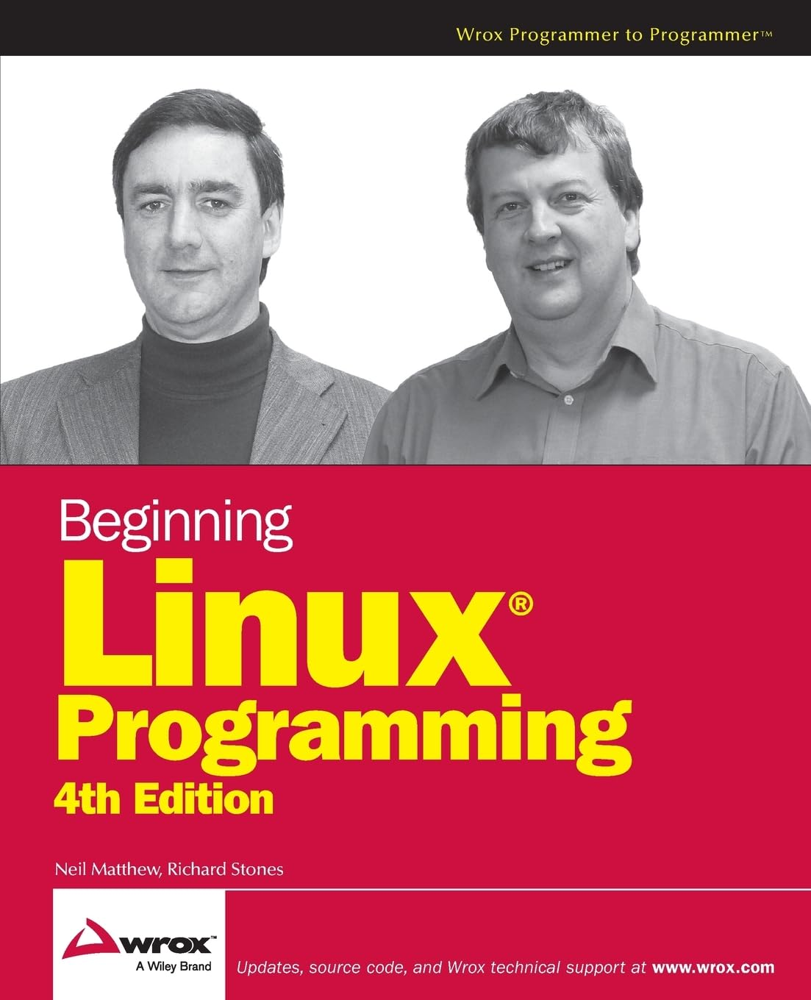

| Course Name | Course Code | Credits | Semester | Year |
|---|---|---|---|---|
| Operating Systems | MC4109 | 3 | Autumn | 2024 |
This course provides an introduction to fundamental concepts of operating systems and describes concepts of operating systems in terms of functions, structure, and implementation. It covers the principles and techniques in the design of operating systems. Topics included in this course are process management,scheduling policies for CPU, inteprocess communications, synchronization, deadlocks, memory management, file management, and input/output operations.
This course will cover fundamental concepts of operating systems.
|  |
Book title: Operating System Concepts, 9th Edition |
|  |
Book title: Modern Operating Systems, 3rd Edition |
|  |
Book title: Operating Systems:Internals and Design Principles, 9th Edition |
|  |
Book title: Operating Systems a Concept Based Approach, 3rd Edition |
|  |
Book title: Beginning Linux Programming, 4th Edition |
copyright@ajitkumarsahoo.2024